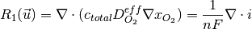
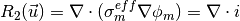

2. Introduction to AppCathode¶
2.1. Introduction¶
AppCathode is the simplest of the openFCST application. It is used to study mass and charge transport in a cathode electrode. Different catalyst layer models can be evaluated including:
- macro-homogeneous catalyst layer model
- agglomerate catalyst layer model.
2.2. Governing equations¶
The governing equations are



where, for the case of a macro-homogeneous catalyst layer,
and for the case of the agglomerate, reference a below provides a more detailed formulation.
The solution variables are the protonic potential,  , the electronic potential,
, the electronic potential,  and, instead of the oxygen concentration,
we use the oxygen molar fraction, , that also accounts for the oxygen dissolving in the ionomer by using Henrys Law.
and, instead of the oxygen concentration,
we use the oxygen molar fraction, , that also accounts for the oxygen dissolving in the ionomer by using Henrys Law.
The govering equations above are nonlinear and therefore they cannot be solved directly. In OpenFCST, we have decided to solve the system of equations using a nonlinear Newton solver. Therefore, instead of implemeting the equations above, a linearization of the governing equations above are solved, i.e.
For more information on the governing equations, discretization and solution methodology please read Secanell07a and Secanell07b.
2.3. Cathode Example Directory structure¶
The cathode directory consists of the following folders:
- template : This folder contains the default files for running all the examples in the other folders. Please do not modify this file as it will result in all tests failing. If you would like to create your own example either include this file to your simulation using the include command or copy the file to a different location.
- analysis: This folder contains the main.prm and ‘data.prm` files needed to run a single analysis. It is a good starting point to learn how to use OpenFCST.
- polarization_curve : This folder contains the main_test.prm and data_test.prm files needed to run a simulation to obtain a polarization curve. Note the data file includes the template find and adds the necessary modifications. The script to run a test to make sure the polarization curve is running correctly is in the folder regression together with the default data the test is compared to.
- optimization : This filder contains the
main_test.prmanddata_test.prmfiles needed to run a simulation with Dakota to obtain a polarization curve. The test is used to test the functionality of Dakota. The script to run a test to make sure the polarization curve is running correctly is in the folder regression together with the default data the test is compared to.- parallel : This folder contains the
main_test.prmanddata_test.prmfiles needed to run a simulation in parallel. The script to run a test to make sure the polarization curve is running correctly is in the folder regression together with the default data the test is compared to.- Secanell_EA07_Numerical_Optimization_PEMFC_Cathode_Electrodes : This folder contains the data files needed to reproduce the results in reference Secanell07a. A detailed description on how to use the files is given below.
- Secanell_EA07_MultiVariable_Optimization_PEMFC_Cathodes_Agglomerate_Model : This folder contains the data files needed to reproduce the results in reference Secanell07b. It also serves as an example on how to setup a cathode catalyst layer with an agglomerate model.
2.4. Setting up a cathode simulation¶
In order to run OpenFCST, two files are needed that provide the necessary information for OpenFCST to execute:
- A main file: This file is used to select the appropriate: a) type of analysis, i.e. analysis, parametric study, polarization curve and optimization study; application; b) the nonlinear solver; c) data file name; and, d) several less critical parameters.
- A data file: This file is used to input all the input data used for the simulation for the application selected.
Both these files can either be loaded and modified via the openFCST graphical user interface (GUI) or modified as a text file.
2.4.1. Setting up a simulation using the OpenFCST graphical user interface (GUI)¶
If you are using the OpenFCST GUI, you will need to load the .xml files. You can generate an .xml file from a .prm file by calling openFCST. There are two ways of calling OpenFCST:
- Calling the binary file in Install/bin directly by typing from
Install/example/cathodefolder:../../bin/fuel_cell-2d.bin- Sourcing a file with all the aliases for OpenFCST and then using the shortcut
fcst2Dandfcst3D. The file to be sourced is in the mainInstallfolder and is namedfcst_env.sh. To source it, please type the following in a new terminalsource fcst_env.sh.
Let’s use the latter method to generate the .xml files as follows:
$ fcst2D -c main.prm
openFCST will directly parse the main.prm and the associated data and optimization files (if specified in the main.prm file).
If you would like to use the GUI, first launch the GUI by going to Install/bin and typing:
$ ./fcst-gui
Then, select the OpenFCST executable file that you would like the GUI to run, mainly openFCST-2d or openFCST-3d from the /Install/bin folder. Once this has been selected, the following screen will appear

At this point, you can load your main.xml and data.xml files. Go to File> Open Project... and select the main.xml and data.xml files. If you are planning on running an
optimization simulation, then also load the opt.xml file, otherwise select No to loading a new simulation.
Once main.xml and data.xml files are loaded, the following will appear in the GUI,
{kind=link}
At this point, the GUI will show several folders in the main.xml and data.xml tabs. Each folder contains options that you can modify.
You can open each folder by clicking on them in order to see the variables that can be modified in each subsection. If you hover over each variable with your mouse,
a text window will appear explaining the use of each input parameter.
2.4.1.1. The main.xml file¶
The main.xml file contains the following sections:
- Simulator : This section is used to select the type of analysis, the type of application, the non-linear solver and if adaptive refinement is needed.
- Logfile : This section is used to setup logging options.
The section Simulator contains the following parameters:
- simulator name : This parameter is used to select the application you would like to run. If you double-click on the name, a drop-down menu with all possible applications available will appear. Select the application you would like to run from the menu. In your case, select cathode.
- solver name : This parameter is used to specify if the application you are solving is linear or nonlinear. If it is nonlinear several solvers are available. Please select one.
- solver method : This parameter is always set to adaptive. The adaptive option allows the user to use adaptive refinement and global refinement options so that the solution is refined during the solution.
- Analysis type: This parameter is used to specify if you would like to run at a single voltage, a full polarization curve, a parametric study or an optimization case. For now, we will set this value to Analysis. In the following sections, examples of how to use the other types are given.
- simulator parameter file name : This section is very important. The name specified here is the name of the
data.xmlfile you would like to use. Make sure that it matches the second Tab in the GUI, otherwise OpenFCST will run a different datafile than the one that appears in the GUI.- simulator specifications : This section is used only if a fluid flow application is used.
- Subsections Optimization, Parametric Study, and Polarization Curve are used to specify parameters that control those types of analysis and will be discussed later.
2.4.1.2. The data.xml file¶
The simulation data is shown in the second tab in the GUI. If you started the GUI without any files, clicking next in the GUI would generate a defaul data.xml file.
If you are starting, it is highly recommended that you load the default files in the analysis folder.
If you have loaded the data.xml file , go to the next tab, i.e. data.xml. The following screen will appear:
{kind=link}
In this screen, you can select the most suitable options to run your simulation. The most important folders are:
- Grid Generation: Specify the mesh you would like to use. You can either read a mesh from file (Type of mesh>*External mesh*) or have openFCST create the geometry. In this case we use Cathode. This will generate a mesh for a cathode containing a catalyst layer and a gas diffusion layer. The dimensions of these layers can be specified in the section Internal mesh generator parameters. In this section specify dimensions and the Material ID for the layers. This ID is used in section Fuel Cell Data to assign this section of the mesh the necessary properties.
- Discretization: This section is used to specify the type of finite element you would like to use. In this case we use FESystem[FE_Q(1)^3] which means that the three variables/equations – a Bubnov-Galerkin method is used to discretize the equations – that we solve for will be discretized using first order Lagrange finite elements. We could use second order by writing FESystem[FE_Q(2)^3]. We could also used mixed elements by writing FESystem[FE_Q(1)^2-FE_Q(2)]. In the later case, the first two variables/equations are discretized using first order Lagrange elements and the other equation using second order Lagrange elements.
- System Management: This section is used to specify to OpenFCST the number of equations that will be solved and the physics that are solved for each equation. The section Solution variables and the section Equations specifies the names of the equations. Important: Do not touch this subsection as it is dependent on application used.
- Equations: This section is used to specify all the necessary information to initialize each one of the equations selected in System Management. There is one section per equation. In each equation the following must be specified Initial data. The infomration here is used to create an initial solution for nonlinear problems. Provide a list of Material_ID:Value. The Value given will be used to initialize the solution in the section of the mesh with the given Material_ID. Boundary data is used to specify the Diritchlet boundary conditions for the problem.
- Newton: Specify the options for the Netwon solver (For nonlinear applications only).
- Initial Solution: This section is used to provide information on how to initialize the initial solution for nonlinear problems and to specify if the initial solution should be outputed to a file. OpenFCST allows users to run a simulation, store a solution and then use that solution as the initial solution of the next problem. To do so, first set Output initial solution for transfer to true. This will create a hidden file where the solutio is stored. Next, set Read in initial solution from file. Then, the previous solution will be read.
- LinearApplication: Specify the linear solver and options to solve the linearized problem.
- Fuel cell data: This is likely the most important section for an electrochemist. Here is where all the fuel cell parameters are specified. It is likely this is the only section you would like to modify extensively. This section contains several subsection which are used to select the cell operating conditions, and the parameters for each layer.This section is discussed further below.
- Output: This section is used to specify the output format for the mesh and the solution. If you want to visualize the solution with Paraview, then you should output the solution in VTU format.
Fuel cell data contains a section to specify the operating conditions and one per layer. In section Operating conditions the user can specify the cell voltage, temperature, gas inlet conditions. Some of this conditions are Diritchlet boundary conditions. If the variable Adjust initial solution and boundary conditions is set to true, then the values in the Equation section will be overwritten. Note however, that the values in Equation are however necessary to setup the simulation.
Next are the sections to setup a layer. Let’s take a look at section Cathode catalyst layer. All layer constain an entry Material id. This value has to match the value used in the mesh to identify the catalyst layer. Next, the parameter Catalyst layer type is used to select the catalyst layer that will be used. For each layer type, there is a section below where all the parameters can be defined. Similarly to the layer, entries Catalyst type, Catalyst support type, Electrolyte type and Kinetics type can be used to select, from a drop-down menu, the materials that we would like to use to create the layer. These properties are used, in the case of a ConventionalCL and MicroScale catalyst layer to estimate effective transport properties. For each selection, there are sections below that can be used to select parameters that are appropriate for the simulation. Section Generic Data is used to specify permeability and other data common to all porous materials. Section PSD parameters is also used to specify the pore-size distribution for the porous layer.
Once your parameters are set, simply press the Run button to launch the simulation. The ouput will be shown in the black screen to the right. The files in the directory also appear in the bottom right corner. Configure Paraview to open the .vtu files to analyze the output.
2.4.2. Setting up a simulation using a text (.prm) file¶
If instead of using the GUI, you would like to look at the files using a text editor, the .prm files are move convenient. As discussed, the main.prm file is the argument file supplied to the OpenFCST executable. The main.prm file should look like this:
######################################################################
# $Id$
#
# This file is used to simulate a cathode model and to obtain
# a polarisation curve. It will call the data_app_cathode_test.prm
# file which should produce the results saved in test_results.dat.
# Please do not modify this file, it should only be used to run
# the test case.
#
#
# Copyright (C) 2011 by Marc Secanell
#
######################################################################
subsection Simulator
set simulator name = cathode
set simulator parameter file name = data.prm
set nonlinear solver name = Newton3pp
set Analysis type = PolarizationCurve
################################################
subsection Polarization Curve
set Initial voltage [V] = 0.94
set Final voltage [V] = 0.59
set Increment [V] = 0.0377777778
set Min. Increment [V] = 0.01
end
################################################
######################################################################
subsection Optimization
set optimization parameter file name = opt.prm
end
######################################################################
end
The data.prm file for the cathode example is shown below:
######################################################################
#
# This file is used to simulate an cathode and to obtain
# a single point on a polarisation curve. It is based on
# the test case and will be called by the
# main_app_cathode_analysis.prm file.
#
# Copyright (C) 2011-13 by Marc Secanell
#
######################################################################
######################################################################
subsection Grid generation
set Type of mesh = CathodeMPL
set Initial refinement = 2
####
subsection Internal mesh generator parameters
####
subsection Dimensions
set Cathode current collector width [cm] = 0.1
set Cathode channel width [cm] = 0.1
set Cathode CL thickness [cm] = 1.0e-3
set Cathode MPL thickness [cm] = 0
set Cathode GDL thickness [cm] = 0.01
end
####
subsection Material ID
set Cathode GDL = 2
set Cathode CL = 4
end
####
subsection Boundary ID
set c_CL/Membrane = 1
set c_BPP/GDL = 2
set c_Ch/GDL = 3
set c_GDL/CL = 255
end
####
end
####
end
######################################################################
######################################################################
subsection Initial Solution
set Read in initial solution from file = false
set Output initial solution = false
set Output solution for transfer = false
end
######################################################################
######################################################################
subsection Adaptive refinement
set Number of Refinements = 4
set Refinement = adaptive #global | adaptive
set Output initial mesh = false
set Output final solution = false
end
######################################################################
######################################################################
subsection Newton
set Max steps = 100
set Tolerance = 1.e-8
end
######################################################################
######################################################################
subsection System management
set Number of solution variables = 3
subsection Solution variables
set Solution variable 1 = oxygen_molar_fraction
set Solution variable 3 = electronic_electrical_potential
set Solution variable 2 = protonic_electrical_potential
end
subsection Equations
set Equation 1 = Ficks Transport Equation - oxygen
set Equation 3 = Electron Transport Equation
set Equation 2 = Proton Transport Equation
end
end
######################################################################
#####################################################################
subsection Equations
subsection Ficks Transport Equation - oxygen
subsection Initial data
set oxygen_molar_fraction = 2: 1.0, 4: 1.0
end
subsection Boundary data
set oxygen_molar_fraction = 3: 1.0
end
end
subsection Electron Transport Equation
subsection Initial data
set electronic_electrical_potential = 2: 0.7, 4: 0.7
end
subsection Boundary data
set electronic_electrical_potential = 2: 0.7 # V
end
end
subsection Proton Transport Equation
subsection Initial data
set protonic_electrical_potential = 2: 0.0, 4: 0.0
end
subsection Boundary data
set protonic_electrical_potential = 1: 0.0 # V
end
end
end
#####################################################################
######################################################################
subsection Discretization
set Element = FESystem[FE_Q(1)^3] #FESystem[FE_Q(3)-FE_Q(1)^2] #FESystem[FE_Q(1)^3] #System of three fem
end
######################################################################
######################################################################
subsection Fuel cell data
####
subsection Operating conditions
set Adjust initial solution and boundary conditions = true
set Temperature cell [K] = 353
set Cathode pressure [Pa] = 101265 # (1 atm)
set Cathode relative humidity = 0.6
set Voltage cell [V] = 0.7 #828 ## Convergence up to 0.66V
end
####
####
subsection Gas diffusion layer
set Material id = 2
set Gas diffusion layer type = DummyGDL #[ DesignFibrousGDL | DummyGDL | SGL24BA ]
####
subsection DummyGDL
set Oxygen diffusion coefficient, [cm^2/s] = 0.22
set Electrical conductivity, [S/cm] = 40
end
####
end
####
subsection Catalyst layer
set Material id = 4
set Catalyst layer type = DummyCL #[ DummyCL | AgglomerateCL | HomogeneousCL ]
set Kinetics type = TafelKinetics
set Catalyst type = Platinum
set Catalyst support type = CarbonBlack
set Electrolyte type = Nafion
##
subsection Materials
subsection Platinum
set Method for kinetics parameters (ORR) = Parthasarathy
end
end
##
subsection DummyCL
set Oxygen diffusion coefficient, [cm^2/s] = 4:0.0108934499
set Electrical conductivity, [S/cm] = 4:12.00845293
set Protonic conductivity, [S/cm] = 4:0.00910831814
set Active area [cm^2/cm^3] = 4:341183.43125
end
##
end
end
######################################################################
######################################################################
subsection Output Variables
set num_output_vars = 1
set Output_var_0 = current
set Output_var_1 =t_m_Pt
end
######################################################################
######################################################################
subsection Output
subsection Data
set Output format = vtu #tecplot
end
subsection Grid
set Format = eps
end
end
######################################################################
######################################################################
######################################################################
The key disadvantage of using the .prm file is that for the parameters that have options, it is not possible to see the options that are available, therefore the use of the GUI is strongly suggested for users.
2.5. Obtaining a polarization curve¶
In order to obtain a polarization curve, the main.xml file needs to be modified as follows
- Go to section
Simulatorand set the variableAnalysis typetoPolarization Curve- In section Polarization Curve setup the initial and final voltage and the increment between points.
An example main.prm file is given below:
######################################################################
# $Id$
#
# This file is used to simulate a cathode model and to obtain
# a polarisation curve. It will call the data_app_cathode_test.prm
# file which should produce the results saved in test_results.dat.
# Please do not modify this file, it should only be used to run
# the test case.
#
#
# Copyright (C) 2011 by Marc Secanell
#
######################################################################
subsection Simulator
set simulator name = cathode
set simulator parameter file name = data.prm
set nonlinear solver name = Newton3pp
set Analysis type = PolarizationCurve
################################################
subsection Polarization Curve
set Initial voltage [V] = 0.94
set Final voltage [V] = 0.59
set Increment [V] = 0.0377777778
set Min. Increment [V] = 0.01
end
################################################
end
Once the main.xml or .prm file has been modified, run the simulation.
2.6. Additional Examples¶
2.7. References¶
- Secanell, B. Carnes, A. Suleman and N. Djilali, “Numerical Optimization of Proton Exchange Membrane Fuel Cell Cathode Electrodes”, Electrochimica Acta, 52(7):2668-2682, 2007.
- Secanell, K. Karan, A. Suleman and N. Djilali, “Multi-Variable Optimization of PEMFC Cathodes using an Agglomerate Model”, Electrochimica Acta, 52(22):6318-6337, 2007.